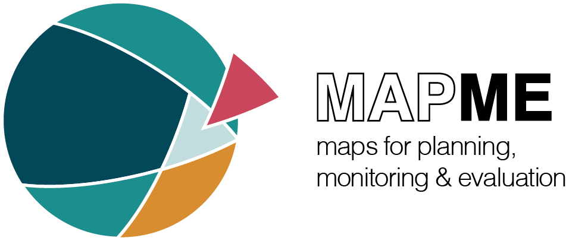

About
This package is a collection of functions used to download, pre-process and conduct analysis of Sentinel-2 L1C data in the process of de- / afforestation monitoring and planning. Data is downloaded from a public data bucket at GoogelCloud. Users thus need a valid Google account to be able to download the package. Additionally gsutils needs to be installed on your machine. Installation instructions can be found here. The package provides functionality for cloud masking, calculation of a high number of vegetation indices, and spatio-temporal aggregations suiting different user needs. Under the hood the R package gdalcubes provides comprehensive and highly-efficient utilities for image warping and pixel-based calculations. Finally, common zonal statistics can be calculated for polygons across the time-dimension of the input raster files.
Tutorial
The tutorial for the usage of the mapme.vegetation package can be found here. Please visit this page in order to get to know the API of mapme.vegetation.
Installation
In our installation instruction we assume that you are going to use R Studio as an IDE. You need to have some software pre-installed software to be able to install the sen2tool package.
- download and install R >= 3.5.x from https://cran.rstudio.com/
- download and install R Studio from https://rstudio.com/products/rstudio/download/#download
- download and install Rtools from https://cran.r-project.org/bin/windows/Rtools and make Rtools available on the PATH variable
- install the devtools and git2r packages with ‘install.packages(c(“devtools”, “git2r”))’
This package can be installed directly by using the remotes package by entering the following command:
remotes::install_github("mapme-initiative/mapme.vegetation")
Additionally, we ship this package with a Dockerfile which can be used to run the packages and its dependencies as a container. When cding into the repository, building and running the image is as simple as:
docker build -t mapmeVegetation:latest .
docker run -d -p 8787:8787 -e USER=myuser -e PASSWORD=mypassword mapmeVegetation
gsutil
It is not possible to download any data without a login to a valid Google account in advance. Follow the instructions outlined here:
- run
bash gcloud initfrom the terminal in R Studio - follow the instructions there to log into a Google account
- create a new project ID or change to an already existing one
- start downloading data afterwards
Note
When using the provided Dockerfile to run the package in an container users might run into issues concerning write permissions to directories. In the case a user does not have permission to write into a specified folder the Download will fail. In these cases the users should contact their administrator for writting permissions or log into the container as a root user and change the permissions manually:
docker exect -it <container_name> bash
followed by:
chmod u+w <directory>